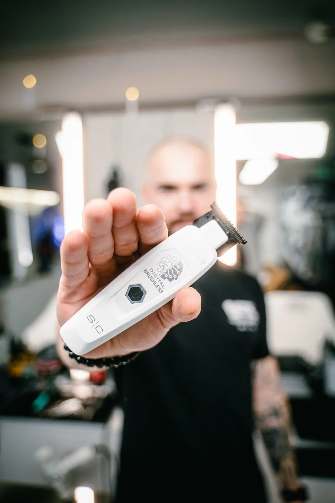
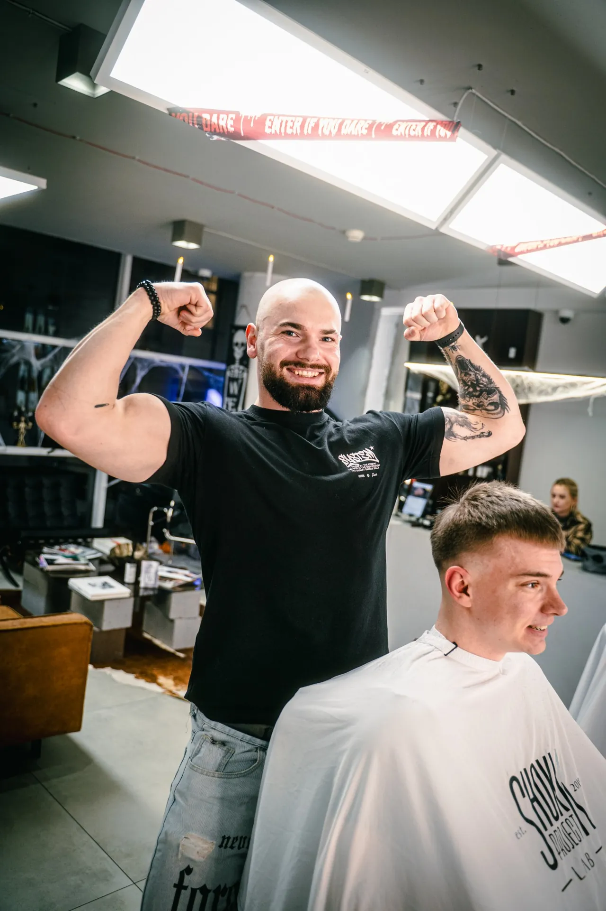

Włosy
Strzyżenie męskie
Maszynka i nożyczki, mycie i stylizacja na koniec.
80 zł
Barber · Stylista fryzur i brody
Fade’y, cięcia nożyczkami, tekstura, kolor i broda – zawsze dopasowane do Ciebie, Twojej twarzy i stylu życia.


O mnie
Cześć! Jestem barberem i stylistą fryzur i brody. Łączę barberską precyzję – czyste przejścia i ostre kontury – z okiem stylisty: formą, teksturą i kolorem.
Nie robię fryzur „z katalogu”. Najpierw rozmawiamy: jak nosisz włosy na co dzień, ile masz czasu rano i co chcesz zmienić. Dopiero potem biorę do ręki maszynkę.
Dobieram fryzurę do kształtu twarzy, rodzaju włosów i Twojego stylu.
Maszynka, nożyczki, brzytwa – precyzja w każdym detalu.
Układam włosy i pokazuję, jak powtórzyć efekt w domu.
Usługi i cennik
Włosy
Maszynka i nożyczki, mycie i stylizacja na koniec.
80 zł
Włosy
Skin, low, mid lub taper – płynne przejścia od skóry.
90 zł
Włosy
Dłuższe włosy, crop, mullet – praca z teksturą i lokami.
od100 zł
Kolor
Platynowy blond, tonowanie, odświeżenie koloru.
Wycena indywidualna
Broda
Trymowanie, kształt dopasowany do twarzy, kontury brzytwą.
60 zł
Pakiet
Pełna metamorfoza podczas jednej wizyty.
130 zł
Ceny orientacyjne – ostateczna kwota zależy od długości włosów i zakresu pracy.
Nie wiesz, co wybrać? Napisz – doradzęMetamorfozy
Krótkie nagrania z moich wizyt. Więcej znajdziesz na Instagramie i TikToku.
Galeria
Kliknij zdjęcie, żeby je powiększyć.
Rezerwacja
Najszybciej złapiesz mnie na Instagramie. Napisz, co chcesz zmienić, a zaproponuję termin.
ul. Przykładowa 12
00-000 Miasto